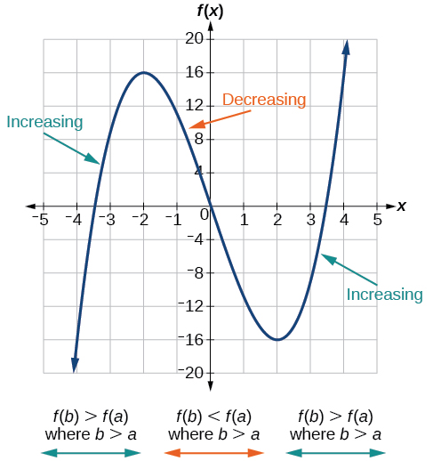
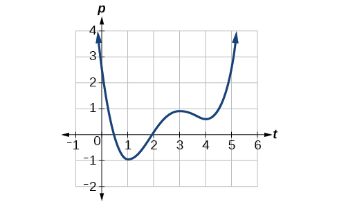
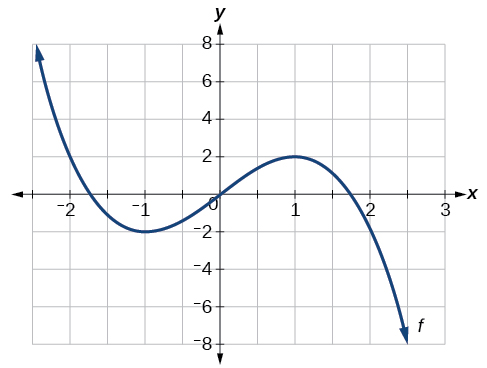
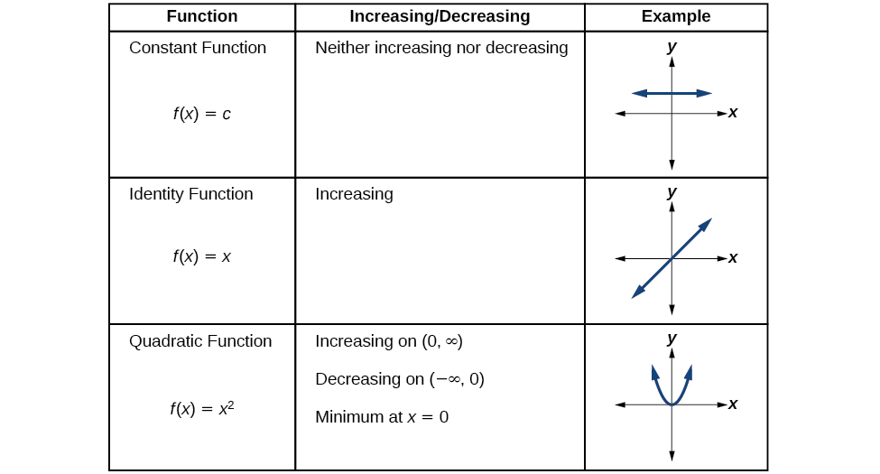
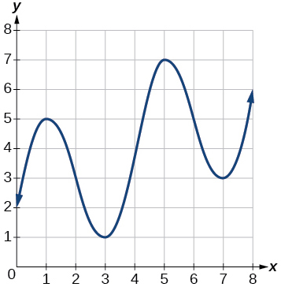
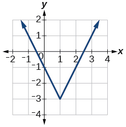
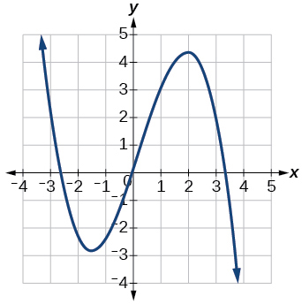

مشق 1
بدلاوے دی اوسط شرح کڈھنا
متعلقہ جدول دے ڈیٹے نال 2007 تے 2009 وچکار پیٹرول دی قیمت دے بدلاوے دی اوسط شرح لبھو۔
ماخذ دا حل
2007 وچ پیٹرول دی قیمت $2.84 سی۔ 2009 وچ قیمت $2.41 سی۔ بدلاوے دی اوسط شرح اے:
PNB-013 · A30 / m49306
بدلاوے دی اوسط شرح، ودھدے گھٹدے وقفے تے مقامی/مطلق انتہائیں
نظرثانی ہُندا مسودہ · ماخذ-بند خودکار جانچ پاس؛ براؤزر، پنجابی تے ریاضی ماہر دی جانچ باقی اے
اگلا حصہ پورا m49306 ماخذ اے: چار مقصد، بدلاوے دی شرح، ودھدے/گھٹدے وقفے، مقامی تے مطلق انتہائیں، پنج جدول، ساریاں مشقاں تے نویں ماخذی تعریفاں۔ 47 آخری مشقاں وچ صرف 24 دے ماخذی حل نیں؛ باقی 23 لئی کوئی جواب نہیں گھڑیا گیا۔
پٹرول، وِکری، آبادی تے کیلکولیٹر دیاں مثالاں ماخذ دے تاریخی/تعلیمی نمونے نیں، موجودہ قیمت، آبادی، قانون یا ٹیکنالوجی دی سفارش نہیں۔
پچھلے کئی دہاکیاں دوران پیٹرول دی قیمت وچ بڑے اتار چڑھاؤ آئے نیں۔ متعلقہ جدول1 وچ 2005–2012 دے سالاں لئی اک گیلن پیٹرول دی اوسط قیمت ڈالر وچ دِتی اے۔ پیٹرول دی قیمت نوں سال دا فنکشن منّیا جا سکدا اے۔
| 2005 | 2006 | 2007 | 2008 | 2009 | 2010 | 2011 | 2012 | |
| 2.31 | 2.62 | 2.84 | 3.30 | 2.41 | 2.84 | 3.58 | 3.68 |
ماخذ دے خلاصے بارے ساڈی اصل وضاحت ویکھو۔
جے سانوں صرف ایہہ جانن وچ دلچسپی ہووے کہ 2005 توں 2012 وچکار پیٹرول دی قیمت کیویں بدلی، تاں اسیں حساب کر سکدے آں کہ فی گیلن قیمت $2.31 توں ودھ کے $3.68 ہو گئی، یعنی $1.37 دا وادھا ہویا۔ ایہہ گل دلچسپ اے، پر ایہہ ویکھنا شاید ہور کم دا ہووے کہ قیمت ہر سال کِنّی بدلی۔ ایس حصے وچ اسیں ایہو جیہے بدلاویاں دی کھوج کراں گے۔
ہر سال قیمت دا بدلاوا اک بدلاوے دی شرح اے، کیوں جے ایہہ دسّدا اے کہ اِن پُٹ مقدار دے بدلاوے دے مقابلے وچ آؤٹ پُٹ مقدار کیویں بدل دی اے۔ اسیں متعلقہ جدول وچ ویکھ سکدے آں کہ پیٹرول دی قیمت ہر سال اِکّو مقدار نال نہیں بدلی، ایس لئی بدلاوے دی شرح مستقل نہیں سی۔ جے اسیں صرف شروع تے آخر دا ڈیٹا ورتیے، تاں اسیں مقرر عرصے لئی بدلاوے دی اوسط شرح لبھ رہے ہوواں گے۔ بدلاوے دی اوسط شرح لبھن لئی اسیں آؤٹ پُٹ قدر دے بدلاوے نوں اِن پُٹ قدر دے بدلاوے نال ونڈدے آں۔
یونانی اکھر (ڈیلٹا) کسے مقدار وچ بدلاوا دسّدا اے؛ اسیں ایس نسبت نوں «ڈیلٹا-y ونڈ ڈیلٹا-x» یا « وچ بدلاوا، وچ بدلاوے نال ونڈیا ہویا» پڑھدے آں۔ کدی کدی اسیں نوں دی بجائے لکھدے آں؛ ایہہ ہجے وی اِن پُٹ قدر دے بدلن نال فنکشن دی آؤٹ پُٹ قدر وچ آون والا بدلاوا ای وکھاندا اے۔ ایس دا مطلب ایہہ نہیں کہ اسیں فنکشن نوں بدل کے کوئی ہور فنکشن بنا رہے آں۔
ساڈی مثال وچ پیٹرول دی قیمت $1.37 ودھی، 2005 توں 2012 تیکر۔ 7 سالاں دوران بدلاوے دی اوسط شرح ایہہ سی:
اوسط دے طور اُتے پیٹرول دی قیمت ہر سال لگ بھگ 19.6¢ ودھی۔
بدلاوے دیاں شرحاں دیاں ہور مثالاں ایہہ نیں:
متعلقہ جدول دے ڈیٹے نال 2007 تے 2009 وچکار پیٹرول دی قیمت دے بدلاوے دی اوسط شرح لبھو۔
2007 وچ پیٹرول دی قیمت $2.84 سی۔ 2009 وچ قیمت $2.41 سی۔ بدلاوے دی اوسط شرح اے:
فنکشن ، جیہڑا متعلقہ شکل وچ وکھایا گیا اے، اوہدے لئی وقفے اُتے بدلاوے دی اوسط شرح لبھو۔

چھوٹی سکرین اُتے پوری شکل ویکھن لئی پاسے سرکاؤ، یا اصل شکل وکھری کھولو۔
ماخذ دے متبادل متن بارے ساڈی اصل وضاحت ویکھو۔
اُتے متعلقہ شکل، وکھاندا اے۔ اُتے گراف وکھاندا اے۔

چھوٹی سکرین اُتے پوری شکل ویکھن لئی پاسے سرکاؤ، یا اصل شکل وکھری کھولو۔
ماخذ دے متبادل متن بارے ساڈی اصل وضاحت ویکھو۔
لیٹا بدلاوا لال تیر نال، تے کھڑا بدلاوا فیروزی تیر نال وکھایا گیا اے۔ آؤٹ پُٹ –3 بدل دی اے، جد کہ اِن پُٹ 3 بدل دی اے؛ ایس نال بدلاوے دی اوسط شرح ملدی اے:
Anna اپنے توں 10 میل دُور رہن والے دوست نوں نال لین توں بعد ویلے دے نال گھر توں اپنا فاصلہ لکھدی اے۔ قدراں متعلقہ جدول وچ وکھائیاں نیں۔ پہلے 6 گھنٹیاں دوران اوہدی اوسط رفتار لبھو۔
| t (گھنٹے) | 0 | 1 | 2 | 3 | 4 | 5 | 6 | 7 |
|---|---|---|---|---|---|---|---|---|
| D(t) (میل) | 10 | 55 | 90 | 153 | 214 | 240 | 292 | 300 |
ماخذ دے خلاصے بارے ساڈی اصل وضاحت ویکھو۔
ایتھے اوسط رفتار ہی بدلاوے دی اوسط شرح اے۔ اوہ 282 میل 6 گھنٹیاں وچ چلی، ایس لئی اوسط رفتار اے:
اوسط رفتار 47 میل فی گھنٹا اے۔
دے بدلاوے دی اوسط شرح وقفے اُتے کڈھو۔
اسیں وقفے دے ہر آخری سرا اُتے فنکشن دی قدر کڈھن توں شروع کر سکدے آں۔
ہُن اسیں بدلاوے دی اوسط شرح کڈھدے آں۔
دو چارج والے ذراں وچکار برقی سکونی زور، جیہنوں نیوٹن وچ نال ناپیا گیا اے، ذراں وچکار سینٹی میٹراں وچ فاصلے نال فارمولے راہیں جُڑ سکدا اے۔ جے ذراں وچکار فاصلہ 2 cm توں ودھا کے 6 cm کر دِتا جاوے، تاں زور دے بدلاوے دی اوسط شرح لبھو۔
اسیں دے بدلاوے دی اوسط شرح وقفے اُتے کڈھ رہے آں۔
بدلاوے دی اوسط شرح نیوٹن فی سینٹی میٹر اے۔
دے بدلاوے دی اوسط شرح وقفے اُتے لبھو۔ جواب والی اک عبارت ہووے گا۔
اسیں بدلاوے دی اوسط شرح دا فارمولا ورتدے آں۔
ایہہ نتیجہ سانوں بدلاوے دی اوسط شرح دے حساب نال، تے کسے ہور نقطے وچکار، دسّدا اے۔ مثال لئی، وقفے اُتے بدلاوے دی اوسط شرح ہووے گی۔
فنکشن کیویں بدلدے نیں، ایس دی کھوج دا اک حصہ ایہہ اے کہ اسیں اوہ وقفے پہچانیے جنہاں اُتے فنکشن خاص طریقیاں نال بدلدا اے۔ جے کسے وقفے اندر اِن پُٹ قدراں ودھن نال فنکشن دیاں قدراں ودھن، تاں اسیں آکھدے آں کہ فنکشن اوس وقفے اُتے ودھدا اے۔ ایس طرح، جے کسے وقفے اُتے اِن پُٹ قدراں ودھن نال فنکشن دیاں قدراں گھٹن، تاں فنکشن اوس وقفے اُتے گھٹدا اے۔ ودھدے فنکشن دے بدلاوے دی اوسط شرح مثبت، تے گھٹدے فنکشن دے بدلاوے دی اوسط شرح منفی ہوندی اے۔ متعلقہ شکل فنکشن اُتے ودھن تے گھٹن والے وقفیاں دیاں مثالاں وکھاندا اے۔

چھوٹی سکرین اُتے پوری شکل ویکھن لئی پاسے سرکاؤ، یا اصل شکل وکھری کھولو۔
ماخذ دے متبادل متن بارے ساڈی اصل وضاحت ویکھو۔
بھانویں کجھ فنکشن اپنے پورے ڈومین اُتے ودھدے (یا گھٹدے) نیں، پر کئی ہور اِنج نہیں ہوندے۔ اِن پُٹ دی اوہ قدر جتھے فنکشن ودھن توں گھٹن ول بدلدا اے (جدوں اسیں کھبّے توں سجّے، یعنی اِن پُٹ متغیر دے ودھن ول، جاندے آں)، مقامی اُچی قدر دی تھاں اے۔ اوس نقطے اُتے فنکشن دی قدر مقامی اُچی قدر اے۔ جے فنکشن دیاں اک توں ودھ ایسیاں قدراں ہون، تاں اسیں اوہناں نوں مقامی اُچیاں قدراں آکھدے آں۔ ایس طرح، اِن پُٹ دی اوہ قدر جتھے اِن پُٹ متغیر ودھن نال فنکشن گھٹن توں ودھن ول بدلدا اے، مقامی نیویں قدر دی تھاں اے۔ اوس نقطے اُتے فنکشن دی قدر مقامی نیویں قدر اے۔ ایس دی جمع «مقامی نیویاں قدراں» اے۔ مقامی اُچیاں تے نیویاں قدراں نوں اکٹھیاں مقامی اُچیاں تے نیویاں قدراں، یعنی فنکشن دیاں مقامی انتہائی قدراں، آکھیا جاندا اے۔ (اکّلی قدر نوں «انتہائی قدر» آکھدے آں۔) کئی وار مقامی دی بجائے نسبتی لفظ ورتیا جاندا اے۔ ایس لکھت وچ اسیں مقامی لفظ ورتاں گے۔
صاف گل اے کہ جیہڑے وقفے اُتے فنکشن مستقل اے، اوتھے اوہ نہ ودھدا اے تے نہ گھٹدا اے۔ انتہائی قدراں اُتے وی فنکشن نہ ودھدا اے تے نہ گھٹدا اے۔ چیتے رکھو کہ سانوں مقامی انتہائی قدراں دی گل کرنی پیندی اے، کیوں جے ایتھے دِتی تعریف مطابق کوئی مقامی انتہائی قدر لازماً فنکشن دے پورے ڈومین دی سبھ توں اُچی یا سبھ توں نیویں قدر نہیں ہوندی۔
جیہڑے فنکشن دا گراف متعلقہ شکل وچ وکھایا گیا اے، اوہدی مقامی اُچی قدر 16 اے تے ایہہ اُتے آؤندی اے۔ مقامی نیویں قدر اے تے ایہہ اُتے آؤندی اے۔

چھوٹی سکرین اُتے پوری شکل ویکھن لئی پاسے سرکاؤ، یا اصل شکل وکھری کھولو۔
ماخذ دے متبادل متن بارے ساڈی اصل وضاحت ویکھو۔
گراف توں مقامی اُچیاں تے نیویاں قدراں لبھن لئی سانوں گراف ویکھ کے طے کرنا پیندا اے کہ اک کھلے وقفے اندر گراف بالترتیب کتھے اپنے سبھ توں اُچے تے سبھ توں نیویں نقطے اُتے پہنچدا اے۔ رولر کوسٹر دی چوٹی وانگ، فنکشن دا گراف مقامی اُچی قدر اُتے دوہاں پاسیاں دے نیڑے دے نقطیاں نالوں اُچا ہوندا اے۔ مقامی نیویں قدر اُتے گراف گوانڈھی نقطیاں نالوں نیواں وی ہووے گا۔ متعلقہ شکل مقامی اُچی قدر لئی ایہہ خیال وکھاندا اے۔

چھوٹی سکرین اُتے پوری شکل ویکھن لئی پاسے سرکاؤ، یا اصل شکل وکھری کھولو۔
ماخذ دے متبادل متن بارے ساڈی اصل وضاحت ویکھو۔
ایہناں مشاہدیاں توں مقامی اُچیاں تے نیویاں قدراں دی رسمی تعریف بندی اے۔
فنکشن ، جیہڑا متعلقہ شکل وچ دِتا اے، اوہدے لئی اوہ وقفے پہچانو جنہاں اُتے فنکشن ودھدا دکھائی دیندا اے۔

چھوٹی سکرین اُتے پوری شکل ویکھن لئی پاسے سرکاؤ، یا اصل شکل وکھری کھولو۔
ماخذ دے متبادل متن بارے ساڈی اصل وضاحت ویکھو۔
اسیں ویکھدے آں کہ فنکشن کسے وی وقفے اُتے مستقل نہیں۔ جدوں اسیں سجّے ول جاندے آں، فنکشن جتھے اُتّے ول چڑھدا اے اوتھے ودھدا، تے جتھے ہیٹھ ول لَہندا اے اوتھے گھٹدا اے۔ فنکشن توں تیکر تے توں اگے ودھدا دکھائی دیندا اے۔
وقفے دی علامتی لکھت وچ اسیں آکھاں گے کہ فنکشن وقفے (1,3) تے وقفے اُتے ودھدا دکھائی دیندا اے۔
فنکشن دا گراف بناؤ۔ فیر گراف نال فنکشن دیاں مقامی اُچیاں تے نیویاں قدراں دا اندازہ لاؤ تے اوہ وقفے طے کرو جنہاں اُتے فنکشن ودھدا اے۔
ٹیکنالوجی نال سانوں پتا لگدا اے کہ فنکشن دا گراف متعلقہ شکل ورگا اے۔ تے وچکار اک نیواں نقطہ، یعنی مقامی نیویں قدر، تے تے وچکار کتھے اوہدا عکس ورگا اُچا نقطہ، یعنی مقامی اُچی قدر، دکھائی دیندا اے۔

چھوٹی سکرین اُتے پوری شکل ویکھن لئی پاسے سرکاؤ، یا اصل شکل وکھری کھولو۔
ماخذ دے متبادل متن بارے ساڈی اصل وضاحت ویکھو۔
فنکشن ، جیہدا گراف متعلقہ شکل وچ وکھایا گیا اے، اوہدیاں ساریاں مقامی اُچیاں تے نیویاں قدراں لبھو۔

چھوٹی سکرین اُتے پوری شکل ویکھن لئی پاسے سرکاؤ، یا اصل شکل وکھری کھولو۔
ماخذ دے متبادل متن بارے ساڈی اصل وضاحت ویکھو۔
دا گراف ویکھو۔ گراف اُتے مقامی اُچی قدر تک پہنچدا اے، کیوں جے ایہہ دے اردگرد کھلے وقفے دا سبھ توں اُچا نقطہ اے۔ مقامی اُچی قدر -کوارڈینیٹ اے؛ اُتے ایہہ اے۔
گراف اُتے مقامی نیویں قدر تک پہنچدا اے، کیوں جے ایہہ دے اردگرد کھلے وقفے دا سبھ توں نیواں نقطہ اے۔ مقامی نیویں قدر اُتے y-کوارڈینیٹ اے، جیہڑا اے۔
ہُن اسیں اپنے بنیادی اوزار والے فنکشناں ول مُڑدے آں تے متعلقہ شکل، متعلقہ شکل تے متعلقہ شکل وچ اوہناں دے گرافاں دے ورتارے دی گل کردے آں۔

چھوٹی سکرین اُتے پوری شکل ویکھن لئی پاسے سرکاؤ، یا اصل شکل وکھری کھولو۔
ماخذ دے متبادل متن بارے ساڈی اصل وضاحت ویکھو۔

چھوٹی سکرین اُتے پوری شکل ویکھن لئی پاسے سرکاؤ، یا اصل شکل وکھری کھولو۔
ماخذ دے متبادل متن بارے ساڈی اصل وضاحت ویکھو۔

چھوٹی سکرین اُتے پوری شکل ویکھن لئی پاسے سرکاؤ، یا اصل شکل وکھری کھولو۔
ماخذ دے متبادل متن بارے ساڈی اصل وضاحت ویکھو۔
کسے کھلے وقفے دے اردگرد علاقے وچ گراف دے سبھ توں اُچے تے سبھ توں نیویں نقطے (مقامی طور اُتے) لبھن تے پورے ڈومین لئی گراف دے سبھ توں اُچے تے سبھ توں نیویں نقطے لبھن وچ فرق اے۔ سبھ توں اُچے تے سبھ توں نیویں نقطیاں دے -کوارڈینیٹاں (آؤٹ پُٹاں) نوں ترتیب وار مطلق سبھ توں اُچی قدر تے مطلق سبھ توں نیویں قدر آکھیا جاندا اے۔
گراف توں مطلق سبھ توں اُچیاں تے نیویاں قدراں دی تھاں لبھن لئی سانوں گراف ویکھ کے طے کرنا پیندا اے کہ فنکشن دے ڈومین اُتے گراف کتھے اپنے سبھ توں اُچے تے سبھ توں نیویں نقطے تک پہنچدا اے۔ متعلقہ شکل ویکھو۔

چھوٹی سکرین اُتے پوری شکل ویکھن لئی پاسے سرکاؤ، یا اصل شکل وکھری کھولو۔
ماخذ دے متبادل متن بارے ساڈی اصل وضاحت ویکھو۔
ہر فنکشن دی مطلق سبھ توں اُچی یا نیویں قدر نہیں ہوندی۔ بنیادی اوزار والا فنکشن ایس دی اک مثال اے۔
فنکشن ، جیہڑا متعلقہ شکل وچ وکھایا گیا اے، اوہدیاں ساریاں مطلق سبھ توں اُچیاں تے نیویاں قدراں لبھو۔

چھوٹی سکرین اُتے پوری شکل ویکھن لئی پاسے سرکاؤ، یا اصل شکل وکھری کھولو۔
ماخذ دے متبادل متن بارے ساڈی اصل وضاحت ویکھو۔
دا گراف ویکھو۔ گراف دو تھاواں تے اُتے مطلق سبھ توں اُچی قدر تک پہنچدا اے، کیوں جے ایہناں تھاواں اُتے گراف فنکشن دے ڈومین وچ اپنے سبھ توں اُچے نقطے تک پہنچدا اے۔ مطلق سبھ توں اُچی قدر تے اُتے y-کوارڈینیٹ اے، جیہڑا اے۔
گراف اُتے مطلق سبھ توں نیویں قدر تک پہنچدا اے، کیوں جے ایہہ فنکشن دے گراف دے ڈومین وچ سبھ توں نیواں نقطہ اے۔ مطلق سبھ توں نیویں قدر اُتے y-کوارڈینیٹ اے، جیہڑا اے۔
| بدلاوے دی اوسط شرح |
|---|
ماخذ دے خلاصے بارے ساڈی اصل وضاحت ویکھو۔
کی فنکشن دے بدلاوے دی اوسط شرح مستقل ہو سکدی اے؟
ہاں، سارے خطی فنکشناں دے بدلاوے دی اوسط شرح مستقل ہوندی اے۔
جے فنکشن ، اُتے ودھدا تے اُتے گھٹدا اے، تاں دی اُتے مقامی انتہائی قدر بارے کی آکھیا جا سکدا اے؟
مطلق سبھ توں اُچی تے نیویں قدر، مقامی اُچیاں تے نیویاں قدراں نال کیویں رلدیاں تے کیویں وکھ نیں؟
مطلق سبھ توں اُچی تے نیویں قدر پورے گراف نال جُڑدیاں نیں، جد کہ مقامی اُچیاں تے نیویاں قدراں صرف کسے کھلے وقفے دے اردگرد خاص علاقے نال جُڑدیاں نیں۔
ودھن تے گھٹن والے وقفیاں دے حساب نال مطلق قدر والے فنکشن دا گراف، مربعی فنکشن دے گراف نال کیویں رلدا اے؟
اگلیاں مشقاں وچ حقیقی عدداں یا لئی، ہر فنکشن دے بدلاوے دی اوسط شرح دِتے وقفے اُتے لبھو۔
، وقفے اُتے
، وقفے اُتے
، وقفے اُتے
3
، وقفے اُتے
، وقفے اُتے
، وقفے اُتے
، وقفے اُتے
، وقفے اُتے
، وقفے اُتے
، وقفے اُتے
لبھو، جدوں ، اُتے دِتا ہووے۔
اگلیاں مشقاں لئی دا گراف ویکھو، جیہڑا متعلقہ شکل وچ وکھایا گیا اے۔

چھوٹی سکرین اُتے پوری شکل ویکھن لئی پاسے سرکاؤ، یا اصل شکل وکھری کھولو۔
ماخذ دے متبادل متن بارے ساڈی اصل وضاحت ویکھو۔
توں تیکر بدلاوے دی اوسط شرح دا اندازہ لاؤ۔
توں تیکر بدلاوے دی اوسط شرح دا اندازہ لاؤ۔
اگلیاں مشقاں وچ ہر فنکشن دے گراف نال اوہناں وقفیاں دا اندازہ لاؤ جنہاں اُتے فنکشن ودھدا یا گھٹدا اے۔

چھوٹی سکرین اُتے پوری شکل ویکھن لئی پاسے سرکاؤ، یا اصل شکل وکھری کھولو۔
ماخذ دے متبادل متن بارے ساڈی اصل وضاحت ویکھو۔

چھوٹی سکرین اُتے پوری شکل ویکھن لئی پاسے سرکاؤ، یا اصل شکل وکھری کھولو۔
ماخذ دے متبادل متن بارے ساڈی اصل وضاحت ویکھو۔
اُتے ودھدا؛ اُتے گھٹدا اے۔

چھوٹی سکرین اُتے پوری شکل ویکھن لئی پاسے سرکاؤ، یا اصل شکل وکھری کھولو۔
ماخذ دے متبادل متن بارے ساڈی اصل وضاحت ویکھو۔

چھوٹی سکرین اُتے پوری شکل ویکھن لئی پاسے سرکاؤ، یا اصل شکل وکھری کھولو۔
ماخذ دے متبادل متن بارے ساڈی اصل وضاحت ویکھو۔
اُتے ودھدا؛ اُتے گھٹدا اے۔
اگلیاں مشقاں لئی متعلقہ شکل وچ وکھایا گراف ویکھو۔

چھوٹی سکرین اُتے پوری شکل ویکھن لئی پاسے سرکاؤ، یا اصل شکل وکھری کھولو۔
ماخذ دے متبادل متن بارے ساڈی اصل وضاحت ویکھو۔
اوہناں وقفیاں دا اندازہ لاؤ جتھے فنکشن ودھدا یا گھٹدا اے۔
اوہ نقطہ یا نقطے دا اندازہ لاؤ جتھے دے گراف دی مقامی اُچی یا مقامی نیویں قدر اے۔
مقامی اُچی قدر: ؛ مقامی نیویں قدر:
اگلیاں مشقاں لئی متعلقہ شکل وچ دِتا گراف ویکھو۔

چھوٹی سکرین اُتے پوری شکل ویکھن لئی پاسے سرکاؤ، یا اصل شکل وکھری کھولو۔
ماخذ دے متبادل متن بارے ساڈی اصل وضاحت ویکھو۔
جے فنکشن دا پورا گراف وکھایا گیا اے، تاں اوہناں وقفیاں دا اندازہ لاؤ جتھے فنکشن ودھدا یا گھٹدا اے۔
جے فنکشن دا پورا گراف وکھایا گیا اے، تاں مطلق سبھ توں اُچی تے مطلق سبھ توں نیویں قدر دا اندازہ لاؤ۔
مطلق سبھ توں اُچی قدر لگ بھگ اُتے؛ مطلق سبھ توں نیویں قدر لگ بھگ اُتے۔
متعلقہ جدول وچ 1998 توں 2006 تیکر کسے چیز دی سالانہ وِکری (ملین ڈالراں وچ) دِتی اے۔ سالانہ وِکری دے بدلاوے دی اوسط شرح کِنّی سی: (a) 2001 تے 2002 وچکار، تے (b) 2001 تے 2004 وچکار؟
| سال | وِکری (ملین ڈالر) |
|---|---|
| 1998 | 201 |
| 1999 | 219 |
| 2000 | 233 |
| 2001 | 243 |
| 2002 | 249 |
| 2003 | 251 |
| 2004 | 249 |
| 2005 | 243 |
| 2006 | 233 |
ماخذ دے خلاصے بارے ساڈی اصل وضاحت ویکھو۔
متعلقہ جدول وچ 2000 توں 2008 تیکر اک قصبے دی آبادی (ہزاراں وچ) دِتی اے۔ آبادی دے بدلاوے دی اوسط شرح کِنّی سی: (a) 2002 تے 2004 وچکار، تے (b) 2002 تے 2006 وچکار؟
| سال | آبادی (ہزاراں وچ) |
|---|---|
| 2000 | 87 |
| 2001 | 84 |
| 2002 | 83 |
| 2003 | 80 |
| 2004 | 77 |
| 2005 | 76 |
| 2006 | 78 |
| 2007 | 81 |
| 2008 | 85 |
ماخذ دے خلاصے بارے ساڈی اصل وضاحت ویکھو۔
a. –3000; b. –1250
اگلیاں مشقاں وچ ہر فنکشن دے بدلاوے دی اوسط شرح دِتے وقفے اُتے لبھو۔
، وقفے اُتے
، وقفے اُتے
-4
، وقفے اُتے
، وقفے اُتے
27
، وقفے اُتے
، وقفے اُتے
–0.167
، وقفے اُتے
اگلیاں مشقاں وچ گراف بناؤن والی سہولت نال ہر فنکشن دیاں مقامی اُچیاں تے نیویاں قدراں دا اندازہ لاؤ، تے اوہناں وقفیاں دا وی اندازہ لاؤ جنہاں اُتے فنکشن ودھدا تے گھٹدا اے۔
مقامی نیویں قدر اُتے؛ اُتے گھٹدا؛ اُتے ودھدا اے۔
مقامی نیویں قدر اُتے؛ اُتے گھٹدا؛ اُتے ودھدا اے۔
مقامی اُچی قدر اُتے؛ مقامی نیویاں قدراں تے اُتے؛ اُتے گھٹدا؛ اُتے ودھدا اے۔
فنکشن دا گراف متعلقہ شکل وچ وکھایا گیا اے۔

چھوٹی سکرین اُتے پوری شکل ویکھن لئی پاسے سرکاؤ، یا اصل شکل وکھری کھولو۔
ماخذ دے متبادل متن بارے ساڈی اصل وضاحت ویکھو۔
کیلکولیٹر دے سکرین عکس مطابق، نقطہ اگلیاں وچوں کیہڑی شے اے؟
A
من لو ۔ ایہو جیہا عدد لبھو کہ فنکشن دے بدلاوے دی اوسط شرح وقفے اُتے ہووے۔
من لو ۔ ایہو جیہا عدد لبھو کہ دے بدلاوے دی اوسط شرح وقفے اُتے ہووے۔
سفر دے شروع وچ کار دے اوڈومیٹر اُتے 21,395 لکھیا سی۔ سفر دے آخر وچ، 13.5 گھنٹے بعد، اوڈومیٹر اُتے 22,125 لکھیا سی۔ من لو کہ اوڈومیٹر دا پیمانہ میل وچ اے۔ ایس سفر دوران کار دی اوسط رفتار کِنّی سی؟
کار دا ڈرائیور پیٹرول دی ٹینکی بھرن لئی پیٹرول پمپ اُتے رُکیا۔ اوہنے گھڑی ویکھی تے ویلا ٹھیک 3:40 p.m. سی۔ اوس ویلے اوہنے ٹینکی وچ پیٹرول پانا شروع کیتا۔ ٹھیک 3:44 اُتے ٹینکی بھر گئی تے اوہنے ویکھیا کہ اوہنے 10.7 گیلن پیٹرول بھریا سی۔ ٹینکی وچ پیٹرول دے بہاؤ دی اوسط شرح کِنّی سی؟
2.7 گیلن فی منٹ
چن دی سطح دے نیڑے، کسے شے دا ڈِگیا فاصلہ ویلے دا فنکشن اے۔ ایہہ نال دِتا اے، جتھے سیکنڈاں وچ تے فٹاں وچ اے۔ جے کوئی شے کسے اُچائی توں سُٹّی جاوے، تاں توں تیکر اوہدی اوسط رخ والی رفتار لبھو۔
متعلقہ شکل دا گراف دناں دوران اک تابکار مادے دا کھُرنا وکھاندا اے۔

چھوٹی سکرین اُتے پوری شکل ویکھن لئی پاسے سرکاؤ، یا اصل شکل وکھری کھولو۔
ماخذ دے متبادل متن بارے ساڈی اصل وضاحت ویکھو۔
گراف نال توں تیکر کھُرن دی اوسط شرح دا اندازہ لاؤ۔
لگ بھگ –0.6 ملی گرام فی دن
ایتھوں اگے دِتیاں گلاں ساڈی اصل وضاحت نیں؛ ماخذ دا ترجمہ نہیں۔
بدلاوے دی اوسط شرح دے مخرج وچ اِن پُٹ دا فرق اے، ایس لئی دو اِن پُٹ وکھرے ہونے چاہیدے نیں: x₂≠x₁۔ مثال 06 وچ a نال تقسیم لئی a≠0، تے اوہدے «آپ کرو» وچ a≠5 لوڑیندا اے۔ rational فرق-حصیاں وچ اصل مخرجاں تے فرق دا مخرج سارے غیرصفر رہن۔ ایہہ شرطاں اصل وضاحت نیں؛ ماخذ دے فارمولا یا جواب اندر چپکے نال نہیں پائیاں۔
ماخذ پہلے average speed تے چن والی مشق وچ average velocity آکھدا اے۔ پنجابی متن وچ پہلا «اوسط رفتار» تے دوجا «اوسط رخ والی رفتار» اے؛ اردو اصطلاحی پُل دوجے لئی اوسط سمتی رفتار اے۔ ایہہ فرق ماخذ دے دو وکھ انگریزی لفظ قائم رکھدا اے۔
ماخذ دی مرکزی لکھت ان پُٹ دی تھاں تے اوتھے دی فنکشن قدر نوں وکھ کردندی اے، تے رسمی تعریف نیڑے دے ہر x نال موازنہ کردی اے۔ پر آخری لغت «مقامی وڈی/چھوٹی قدر» نوں رخ بدلّن والی اِن پُٹ قدر آکھدی اے۔ اسیں اوہ ماخذی تعریف وفاداری نال رکھی اے؛ عام ریاضی وچ مقام b تے انتہا دی قدر f(b) نوں وکھ پڑھو۔ انڈونیشی موازنہ لغت نوں خاموشی نال بدلدا اے، پر اوہ canonical انگریزی دا بدل نہیں۔
fs-id1165135536272 صرف (a,b) اُتے ودھنا تے (b,c) اُتے گھٹنا دسّدا اے؛ f(b) موجود اے یا کیہڑی قدر اے، ایہہ نہیں دسّدا۔ ایس اکّلی معلومات توں b اُتے مقامی انتہا لازم نہیں۔ سوال بےجواب ماخذی مشق وانگ قائم اے؛ کوئی مسلسل پن فرض نہیں کیتا۔
جدول Table_01_03_03 دے ماخذی summary وچ 2004→243 اے، پر اصل خانے وچ 2004→249 اے۔ خانہ 249 جیویں دا تیویں اے؛ غلط summary وی وکھ metadata وچ محفوظ اے۔ مشق دا ماخذی حل نہیں، ایس لئی ایتھے وی جواب نہیں گھڑیا۔
Toolkit دی پہلی تصویر وچ مستقل فنکشن دی لکھت پکسل اُتے f(x)= توں بعد خالی اے؛ قابل رسائی وضاحت ایہہ خالی جگہ صاف دسّدی اے، c وکھن دا جھوٹا دعویٰ نہیں کردی۔ fs-id1165134080979 دا مختصر alt «reciprocal» آکھدا اے؛ اصل پکسل x=3 دی کھڑی ٹُٹی لکیر تے دو اُتلیاں چوٹیاں وکھاندے نیں۔ اسیں پکسل دا ورتارا دسیا اے، کوئی نواں exact فارمولا نہیں گھڑیا۔ Figure015/014 دے source ID تے file-name اعداد الٹے جیہے نیں، پر اصل mapping نہیں بدلی۔
چووی اصل JPEG نہیں بدلے۔ ماخذ دے وفادار alt وکھرے محفوظ نیں؛ ودھائی قابل رسائی وضاحتاں پکسل اُتے محور، تیر، وقفے، نقطے تے کیلکولیٹر دیاں تقریبی قدراں دسّدی نیں۔ دس انڈونیشی SVG redraw صرف موازنہ نیں، canonical تصویر دا بدل نہیں۔
پٹرول 2005–2012، مصنوعہ دی وِکری 1998–2006 تے آبادی 2000–2008 ماخذی تاریخی/فرضی ڈیٹا نیں۔ اکائیاں نال رکھو: ڈالر فی گیلن، میل فی گھنٹہ، ملین ڈالر تے ہزار بندے۔ حاشیے دا 3/5/2014 وی ماخذی ویکھن دی تاریخ اے۔
rate of change — بدلاوے دی شرح؛ average rate of change — بدلاوے دی اوسط شرح؛ increasing/decreasing — ودھدا/گھٹدا؛ local extrema — مقامی انتہائیں؛ absolute maximum/minimum — مطلق وڈی/چھوٹی قدر۔ ایہہ چوناں عبوری نیں؛ پنجابی ریاضی ماہر دی منظوری ہن تک نہیں۔ اردو صرف پُل اے، پنجابی عبارت دی جگہ نہیں۔
پورا m49306 ماخذ مکمل کرنا وی مقرر پنج کتاباں دا پورا کم مکمل نہیں کردا۔ باقی assignment جاری اے۔
ہر جدول دا ماخذی summary وکھرے data-source-summary وچ محفوظ اے؛ aria-label اصل دکھائی بنتر تے خانے پڑھ کے دِتا گیا اے۔
| شاہ مکھی پنجابی | اردو | English |
|---|---|---|
| الجبرا | الجبرا | algebra |
| متغیر | متغیر | variable |
| جبری عبارت | جبری عبارت | algebraic expression |
| مساوات | مساوات | equation |
| قدر | قیمت / قدر | value |
| تعلق | تعلق | relation |
| ترتیب وار جوڑی | مرتب جوڑا | ordered pair |
| سیٹ | مجموعہ | set |
| رکن | رکن / عنصر | element |
| فنکشن | تفاعل / فنکشن | function |
| ڈومین | دائرۂ تعریف | domain |
| رینج | حاصل شدہ قدروں کا مجموعہ | range |
| اِن پُٹ | داخل کردہ قدر | input |
| آؤٹ پُٹ | حاصل ہونے والی قدر | output |
| آزاد متغیر | آزاد متغیر | independent variable |
| تابع متغیر | تابع متغیر | dependent variable |
| قدرتی عدد | قدرتی عدد | natural number |
| جفت | جفت | even |
| طاق | طاق | odd |
| ٹھیک اک | صرف ایک | exactly one |
| ثبوت | ثبوت | proof |
| ویکٹر | سمتیہ / ویکٹر | vector |
| خطی نقشہ | خطی تبدیلی | linear map |
| فنکشن دی علامتی لکھت | فنکشن کی علامتی صورت | function notation |
| فی صد گریڈ | فیصد نمبر | percent grade |
| گریڈ پوائنٹ اوسط | گریڈ پوائنٹ اوسط | grade point average (GPA) |
| درجہ | درجہ / مرتبہ | rank |
| قیمت | قیمت | price |
| مینو دی چیز | مینو کی شے | menu item |
| قاعدہ | قاعدہ | rule |
| قوساں | قوسین | parentheses |
{kind=link}
{kind=link}
{kind=link}
{kind=link}
{kind=link}
{kind=link}
{kind=link}